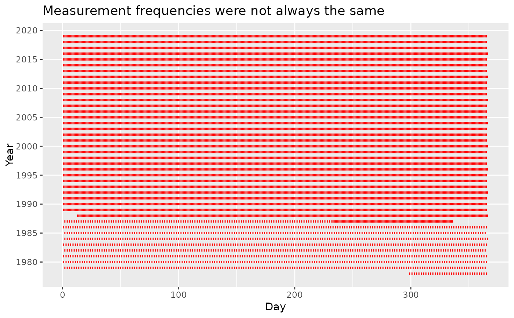

A data set containing the daily ice extent at Arctic Sea from 1978 to 2019, collected by National Oceanic and Atmospheric Administration (NOAA)
Format
A data frame with 13391 rows and 6 variables:
- Year
Years of available data (1978–2019).
- Month
Month (01–12).
- Day
Day of the month indicated in Column Month.
- Extent
Daily ice extent, to three decimal places.
- Missing
Whether a day is missing (1) or not (0)).
- Source Data
data source in NOAA database.
Examples
library(dplyr)
#>
#> Attaching package: ‘dplyr’
#> The following object is masked from ‘package:MASS’:
#>
#> select
#> The following objects are masked from ‘package:stats’:
#>
#> filter, lag
#> The following objects are masked from ‘package:base’:
#>
#> intersect, setdiff, setequal, union
library(lubridate)
#>
#> Attaching package: ‘lubridate’
#> The following objects are masked from ‘package:base’:
#>
#> date, intersect, setdiff, union
library(ggplot2)
data(arctic_2019)
# Create day in the year column to replace Month and Day
north <-
arctic_2019 %>%
mutate(yday = yday(make_date(Year, Month, Day)),
.keep = "all") %>%
select(Year, yday, Extent)
ggplot(north) +
geom_linerange(aes(x = yday, ymin = Year - 0.2, ymax = Year + 0.2),
size = 0.5, color = "red") +
scale_y_continuous(breaks = seq(1980, 2020, by = 5),
minor_breaks = NULL) +
labs(x = "Day",
y = "Year",
title = "Measurement frequencies were not always the same")
#> Warning: Using `size` aesthetic for lines was deprecated in ggplot2 3.4.0.
#> ℹ Please use `linewidth` instead.
